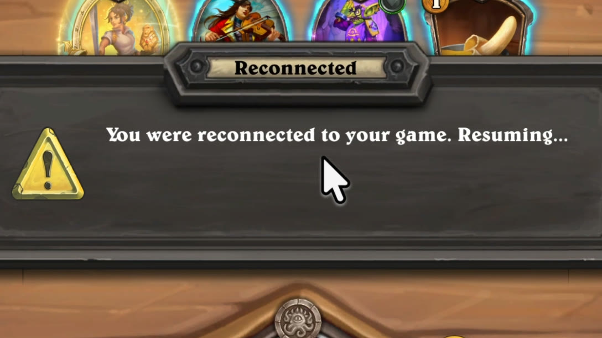
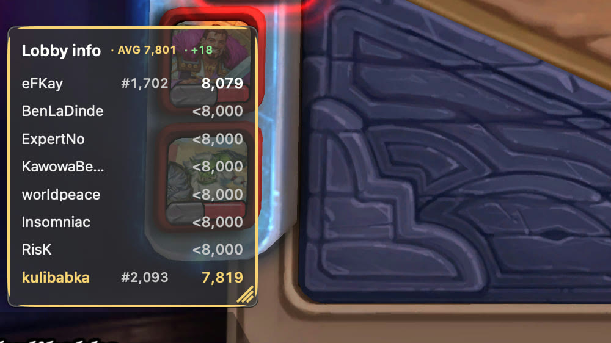
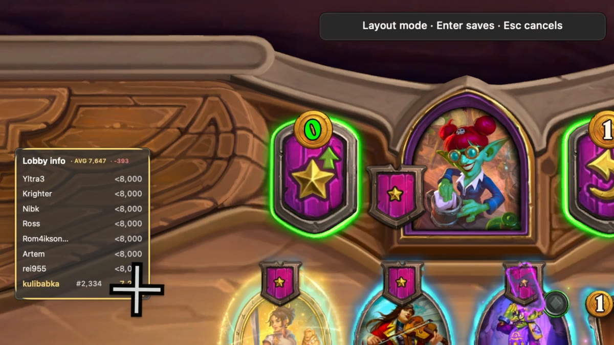

Instant Reconnect
Trigger
Press a shortcut to trigger a reconnect in your current Battlegrounds match. No quitting Hearthstone or switching off your Wi-Fi.
About 0.17 seconds to trigger. Rejoining takes longer.
HS Reconnect is your free, open-source companion for Hearthstone
Battlegrounds.
Reconnect with a shortcut. See who you’re playing against.
v2.0.0macOS 13+Apple silicon & Intel

Press a shortcut to trigger a reconnect in your current Battlegrounds match. No quitting Hearthstone or switching off your Wi-Fi.
About 0.17 seconds to trigger. Rejoining takes longer.
See your opponents’ public MMR, your lobby’s estimated average rating, and their positions on your region’s leaderboard.
For Solo Battlegrounds in Europe, Americas, and Asia-Pacific. Public ratings and ranks appear where available.


Press ⌘ ⇧ L to reposition the lobby info window. Move it, resize it, and press Enter to save a layout that fits the way you play.
Adjust opacity in the app. The overlay stays out of the way of your clicks during play.
Downloads
Successful Reconnects
Seconds to Trigger
Rounded totals. 0.17 seconds is the median trigger time, not the time needed to rejoin the match.
Yes, on macOS 13+ with native Hearthstone. Apple silicon and Intel are supported. Install the DMG, approve both macOS prompts, and quit HSTracker before using lobby info.
There’s a five-second cooldown and no per-match limit. The shortcut triggers in about 0.17 seconds; Hearthstone takes longer to rejoin.
Your Solo lobby is read locally and matched with Blizzard’s public leaderboard. Ratings and ranks appear where available; the lobby average is estimated.
Yes, it’s free and open source. Lobby data stays on your Mac. TelemetryDeck records anonymous installation and feature-use counts. Read the privacy statement.